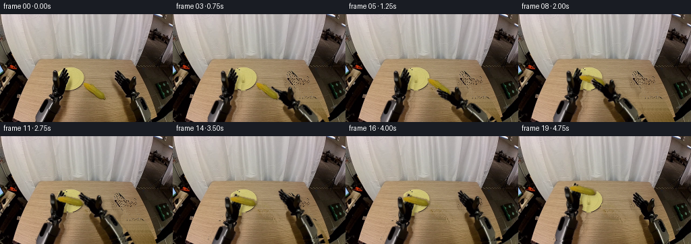
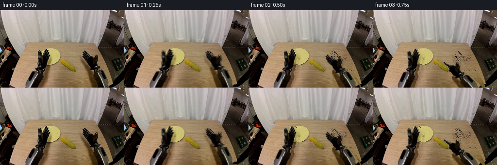
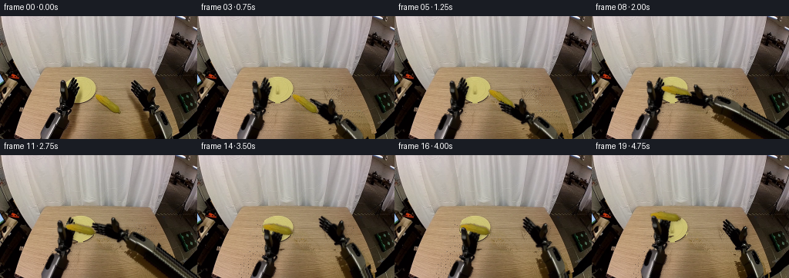
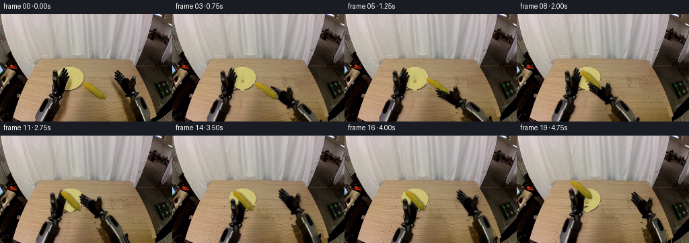
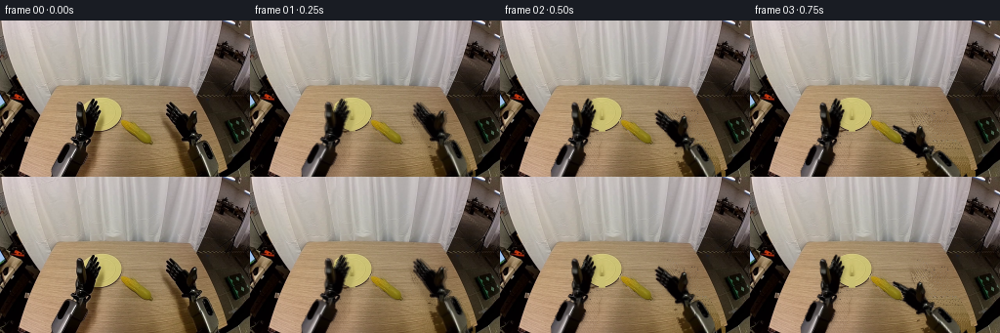

CODING AGENTS AS PIXEL WORLD MODELS
traex/GPT-6.1-Sol · common50_0037
点击播放 · 原生 RGB 像素
逐轮保存的候选
回放视频、检查图与代码变化。
每份候选均可单独播放。实际图片检查记录在下方工具轨迹中。
候选 01播放与检查图
点击播放 · 原生 RGB 像素


展开代码变化
--- 上一保存版本
+++ 本次保存版本
@@ -0,0 +1,197 @@
+from pathlib import Path
+import math
+import numpy as np
+from PIL import Image, ImageDraw, ImageFilter
+from scipy.ndimage import distance_transform_edt, gaussian_filter, map_coordinates
+import artifact_io
+
+HERE=Path(__file__).resolve().parent
+SRC=np.asarray(Image.open(HERE/'first_frame.png').convert('RGB'))
+H,W=SRC.shape[:2]
+
+def polygon_mask(points, size=(256,160)):
+ m=Image.new('L',size,0)
+ ImageDraw.Draw(m).polygon(points,fill=255)
+ return np.asarray(m).copy()/255.
+
+# These outlines are coordinates of visible solid components, not their shadows.
+left_poly=[(51,159),(54,148),(57,141),(60,132),(65,126),(71,125),(72,120),
+ (77,117),(77,113),(77,106),(78,102),(78,98),(78,95),(78,92),
+ (77,89),(78,84),(80,82),(82,82),(85,84),(85,88),(87,92),
+ (88,89),(90,86),(91,82),(92,79),(94,79),(96,81),(97,83),
+ (99,83),(100,85),(99,87),(101,87),(102,88),(104,92),
+ (104,96),(102,101),(100,106),(100,112),(100,117),(98,120),
+ (99,123),(96,126),(94,128),(95,133),(96,137),(95,141),
+ (93,144),(91,146),(89,151),(88,155),(87,159)]
+right_poly=[(191,159),(187,147),(184,136),(182,131),(179,128),(179,123),
+ (179,120),(180,117),(183,115),(182,110),(180,106),(177,103),
+ (174,99),(172,96),(171,94),(171,91),(169,89),(168,87),(169,86),
+ (171,86),(172,84),(173,82),(175,84),(176,87),(179,89),(181,91),
+ (185,94),(188,95),(191,96),(194,98),(195,96),(196,93),
+ (198,92),(200,93),(201,95),(202,99),(201,104),(200,110),
+ (201,114),(205,116),(207,118),(205,120),(203,122),(203,123),
+ (206,123),(209,123),(212,125),(215,127),(217,130),(220,135),
+ (223,141),(227,148),(231,159)]
+LM=polygon_mask(left_poly); RM=polygon_mask(right_poly)
+# Spectral separation keeps the original kernels and darker underside intact.
+cornpoly=[(123,101),(129,101),(137,104),(144,109),(150,113),
+ (155,117),(157,122),(156,125),(153,127),(147,124),(142,121),
+ (137,117),(133,113),(129,110),(125,107),(123,104)]
+CM=polygon_mask(cornpoly)
+yy,xx=np.mgrid[:H,:W]
+# Build the revealed wood using same-row texture, preserving its illumination gradient.
+remove=(LM>.1)|(RM>.1)|(CM>.1)
+# Remove the corn's original contact shadow as it lifts away.
+shadow_corn=polygon_mask([(126,106),(139,112),(154,119),(159,124),(154,128),(141,124),(133,118)])
+# Other table shadows are soft, and travel with the corresponding arm.
+left_shadow=polygon_mask([(89,102),(107,101),(107,112),(100,129),(99,148),(94,159),(78,159),(78,128)])
+right_shadow=polygon_mask([(165,98),(180,106),(192,128),(197,159),(181,159),(176,133),(170,113)])
+cleanmask=np.maximum.reduce([LM,RM,CM,shadow_corn,left_shadow*.75,right_shadow*.75])
+# Only manipulate workspace table; leave the wall and fixed outer equipment alone.
+wood_valid=(xx>=28)&(xx<214)&(yy>=69)&(~remove)&(left_shadow<.1)&(right_shadow<.1)&(shadow_corn<.1)
+wood_valid &= ~(((xx-104)/23)**2+((yy-96)/21)**2<1)
+wood=SRC.astype(float).copy()
+# Wood has long grain along x. Fill each hole from neighbouring unobstructed strips,
+# correcting the smooth horizontal shading of the wooden tabletop.
+for y in range(78,H):
+ good=np.where(wood_valid[y])[0]
+ if not len(good): continue
+ shade=np.polyfit(good,SRC[y,good].astype(float),1)
+ for x in np.where(cleanmask[y]>.01)[0]:
+ candidates=good[np.argsort(np.abs(good-x))[:12]]
+ # A fixed donor per pixel prevents any temporal background flickering.
+ donor=int(candidates[(x*7+y*3)%len(candidates)])
+ wood[y,x]=SRC[y,donor]+shade[0]*(x-donor)
+
+# Restore the occluded portion of the yellow plate analytically from its visible
+# counterpart, with the photographic pixels kept everywhere already visible.
+plate=((xx-104.0)/20.5)**2+((yy-96.0)/17.6)**2
+for y,x in zip(*np.where((plate<1.04)&(cleanmask>.01))):
+ donor=int(round(208-x))
+ if donor>=0 and donor<W and cleanmask[y,donor]<.01 and plate[y,donor]<1.04:
+ wood[y,x]=SRC[y,donor]
+ else:
+ rad=math.sqrt(plate[y,x]); val=np.array([205.,194.,116.])
+ if rad>.92: val=np.array([191.,177.,109.])
+ val += np.array([1.2,1.,.6])*(96-y)*.16
+ val += (math.sin(x*2.1+y*1.7)*1.1)
+ wood[y,x]=val
+
+# Smooth only filled pixels to avoid jagged seams; the fixed workspace stays exact.
+fill=np.clip(wood,0,255)
+soft=gaussian_filter(fill,(.5,.5,0))
+filled=.82*fill+.18*soft
+base=SRC.astype(float)*(1-cleanmask[...,None])+filled*cleanmask[...,None]
+base=np.clip(base,0,255).astype(np.uint8)
+Image.fromarray(base).save(HERE/'background.png')
+
+# Extend the source arm shafts beyond the image, so lifted poses stay attached
+# to mechanisms below the camera crop. Visible link surfaces undergo only rigid
+# rotations and translations; they are never stretched or bent.
+def extend_sprite(mask, side):
+ hh=240
+ rgb=np.zeros((hh,W,3),np.uint8); rgb[:H]=SRC
+ a=np.zeros((hh,W),float); a[:H]=mask
+ stripe=np.where(mask[159]>.5)[0]
+ for y in range(160,hh):
+ delta=y-159
+ shift=int(round((-.39 if side=='left' else .29)*delta))
+ donor_y=151+(delta%9)
+ for x in stripe:
+ tx=x+shift
+ if 0<=tx<W:
+ sx=int(np.clip(x+int(round((-.39 if side=='left' else .29)*(donor_y-159))),0,W-1))
+ rgb[y,tx]=SRC[donor_y,sx]
+ a[y,tx]=1
+ # A subpixel edge only: retain internal high-frequency metal and kernels.
+ a=np.asarray(Image.fromarray((a*255).astype(np.uint8)).filter(ImageFilter.GaussianBlur(.33)))/255.
+ return rgb,a
+LS=extend_sprite(LM,'left'); RS=extend_sprite(RM,'right')
+CS=(SRC, np.asarray(Image.fromarray((CM*255).astype(np.uint8)).filter(ImageFilter.GaussianBlur(.35)))/255.)
+
+# Inverse sampling of a rigid transform around each tool's aperture.
+def warp(sprite, origin, target, degrees):
+ rgb,alpha=sprite
+ theta=math.radians(degrees); c,s=math.cos(theta),math.sin(theta)
+ x=xx-target[0]; y=yy-target[1]
+ sx=c*x+s*y+origin[0]; sy=-s*x+c*y+origin[1]
+ coords=np.array([sy,sx])
+ a=map_coordinates(alpha,coords,order=1,mode='constant',cval=0,prefilter=False)
+ premul=rgb.astype(float)*alpha[...,None]
+ col=np.stack([map_coordinates(premul[...,k],coords,order=1,mode='constant',cval=0,prefilter=False) for k in range(3)],-1)
+ return col,a
+
+def over(canvas, layer):
+ col,a=layer
+ return canvas*(1-a[...,None])+col
+
+def smooth(z):
+ z=np.clip(z,0,1);return z*z*(3-2*z)
+
+def pose(keys,t):
+ if t<=keys[0][0]:return np.array(keys[0][1:],float)
+ for a,b in zip(keys[:-1],keys[1:]):
+ if t<=b[0]:
+ s=smooth((t-a[0])/(b[0]-a[0]))
+ return np.array(a[1:])*(1-s)+np.array(b[1:])*s
+ return np.array(keys[-1][1:],float)
+
+# Contact points are shared between object and fingers in each grasp phase.
+# The right hand first reaches the observed cob, then places it on the plate.
+RKEY=[(0,184,94,0),(1,181,94,-2),(4,152,121,-25),
+ (5,151,115,-24),(9,119,100,-14),(10,119,100,-14),
+ (12,145,84,-9),(15,180,90,-2),(19,184,94,0)]
+LKEY=[(0,91,87,0),(3,84,87,-5),(9,84,87,-5),(11,87,88,-4),
+ (14,90,93,-5),(16,90,93,-5),(19,81,77,-10)]
+CKEY=[(0,139,114,0),(4,139,114,0),(5,138,108,-1),
+ (9,104,97,-23),(16,104,97,-23),(19,95,81,-23)]
+
+# Two independent rigid fingers can close by a few pixels at the jaw hinges.
+# Keep the textured palm and shafts absolutely unchanged.
+right_front=polygon_mask([(169,85),(173,83),(177,89),(182,94),(185,99),(182,102),(176,98),(170,91),(168,88)])
+left_front=polygon_mask([(78,84),(82,82),(85,85),(86,91),(86,96),(82,99),(79,95),(78,90)])
+RFR=(SRC,right_front);LFR=(SRC,left_front)
+
+frames=[]
+for i in range(20):
+ if i==0:
+ frames.append(SRC.copy());continue
+ r=pose(RKEY,i);l=pose(LKEY,i);c=pose(CKEY,i)
+ rl=warp(RS,(184,94),r[:2],r[2]); ll=warp(LS,(91,87),l[:2],l[2])
+ cob=warp(CS,(139,114),c[:2],c[2])
+ canvas=base.astype(float).copy()
+ # Soft photographic contact shadows generated from the actual moving silhouettes.
+ for layer,strength in [(rl,.20),(ll,.18)]:
+ aa=layer[1]
+ sh=gaussian_filter(aa,1.7)
+ sh=map_coordinates(sh,np.array([yy-2.,xx-2.]),order=1,mode='constant',cval=0,prefilter=False)
+ sh*=((yy>71)&(xx>25)&(xx<216))
+ canvas*=1-sh[...,None]*strength
+ is_held=(i>=4 and i<10) or i>=16
+ elevation=0 if not is_held else (4 if i<9 else max(0,(i-16)*2))
+ ca=cob[1]
+ cs=gaussian_filter(ca,1.1+elevation*.14)
+ cs=map_coordinates(cs,np.array([yy-1-elevation*.35,xx-1]),order=1,mode='constant',cval=0,prefilter=False)
+ canvas*=1-cs[...,None]*(.18 if elevation==0 else .105)
+ # Original shafts and palms occlude their own shadows, as rigid links should.
+ canvas=over(canvas,rl);canvas=over(canvas,ll)
+ canvas=over(canvas,cob)
+ # Put the contacting near finger in front of the kernels during a grasp.
+ if 4<=i<=10:
+ front=warp(RFR,(184,94),r[:2],r[2])
+ canvas=over(canvas,front)
+ if i>=15:
+ front=warp(LFR,(91,87),l[:2],l[2])
+ canvas=over(canvas,front)
+ out=np.clip(np.round(canvas),0,255).astype(np.uint8)
+ # Ease away from the exact photographic source, without an abrupt removal step.
+ if i==1:
+ out=np.round(SRC*.28+out*.72).astype(np.uint8)
+ frames.append(out)
+
+frames=np.stack(frames)
+artifact_io.save(frames,HERE)
+np.save(HERE/'generated_rgb.npy',frames)
+print('Saved',frames.shape,frames.dtype)
+print('First frame exact:',np.array_equal(frames[0],SRC))
+print('Frame deltas:',[round(float(np.abs(frames[j].astype(float)-frames[j-1]).mean()),2) for j in range(1,20)])
候选 02播放与检查图
点击播放 · 原生 RGB 像素

展开代码变化
--- 上一保存版本
+++ 本次保存版本
@@ -2,7 +2,7 @@
import math
import numpy as np
from PIL import Image, ImageDraw, ImageFilter
-from scipy.ndimage import distance_transform_edt, gaussian_filter, map_coordinates
+from scipy.ndimage import distance_transform_edt, gaussian_filter, map_coordinates, binary_dilation, binary_fill_holes
import artifact_io
HERE=Path(__file__).resolve().parent
@@ -31,13 +31,21 @@
(198,92),(200,93),(201,95),(202,99),(201,104),(200,110),
(201,114),(205,116),(207,118),(205,120),(203,122),(203,123),
(206,123),(209,123),(212,125),(215,127),(217,130),(220,135),
- (223,141),(227,148),(231,159)]
+ (223,141),(225,148),(226,159)]
LM=polygon_mask(left_poly); RM=polygon_mask(right_poly)
+red,green,blue=SRC.astype(float).transpose(2,0,1)
+material=((red-green<20)&(green-blue<24))|(SRC.mean(2)<43)
+# Separate metal from the visible wood / plate in the spaces between fingers.
+# The slight boundary expansion captures tiny photographic edge highlights.
+LM=(binary_dilation(LM>.5,iterations=2)&material).astype(float)
+RM=(binary_dilation(RM>.5,iterations=2)&material).astype(float)
# Spectral separation keeps the original kernels and darker underside intact.
cornpoly=[(123,101),(129,101),(137,104),(144,109),(150,113),
(155,117),(157,122),(156,125),(153,127),(147,124),(142,121),
(137,117),(133,113),(129,110),(125,107),(123,104)]
CM=polygon_mask(cornpoly)
+CM=((CM>.5)&(green-blue>40)&(red-green>9)).astype(float)
+CM=binary_fill_holes(CM>.5).astype(float)
yy,xx=np.mgrid[:H,:W]
# Build the revealed wood using same-row texture, preserving its illumination gradient.
remove=(LM>.1)|(RM>.1)|(CM>.1)
@@ -46,7 +54,13 @@
# Other table shadows are soft, and travel with the corresponding arm.
left_shadow=polygon_mask([(89,102),(107,101),(107,112),(100,129),(99,148),(94,159),(78,159),(78,128)])
right_shadow=polygon_mask([(165,98),(180,106),(192,128),(197,159),(181,159),(176,133),(170,113)])
-cleanmask=np.maximum.reduce([LM,RM,CM,shadow_corn,left_shadow*.75,right_shadow*.75])
+cleanmask=np.maximum.reduce([binary_dilation(LM>.5,iterations=2),
+ binary_dilation(RM>.5,iterations=2), binary_dilation(CM>.5,iterations=1),
+ shadow_corn,left_shadow,right_shadow]).astype(float)
+# Wipe the full old tool outlines, including antialiased edge pixels, but not
+# their transparent apertures unless they are part of the plate restoration.
+cleanmask=np.maximum(cleanmask,polygon_mask(left_poly))
+cleanmask=np.maximum(cleanmask,polygon_mask(right_poly))
# Only manipulate workspace table; leave the wall and fixed outer equipment alone.
wood_valid=(xx>=28)&(xx<214)&(yy>=69)&(~remove)&(left_shadow<.1)&(right_shadow<.1)&(shadow_corn<.1)
wood_valid &= ~(((xx-104)/23)**2+((yy-96)/21)**2<1)
@@ -59,6 +73,9 @@
shade=np.polyfit(good,SRC[y,good].astype(float),1)
for x in np.where(cleanmask[y]>.01)[0]:
candidates=good[np.argsort(np.abs(good-x))[:12]]
+ # Never use distant dark fixed equipment as a source of tabletop.
+ candidates=candidates[SRC[y,candidates].mean(1)>65]
+ if not len(candidates): candidates=good[np.argsort(np.abs(good-x))[:5]]
# A fixed donor per pixel prevents any temporal background flickering.
donor=int(candidates[(x*7+y*3)%len(candidates)])
wood[y,x]=SRC[y,donor]+shade[0]*(x-donor)
@@ -89,10 +106,13 @@
# to mechanisms below the camera crop. Visible link surfaces undergo only rigid
# rotations and translations; they are never stretched or bent.
def extend_sprite(mask, side):
- hh=240
+ hh=320
rgb=np.zeros((hh,W,3),np.uint8); rgb[:H]=SRC
a=np.zeros((hh,W),float); a[:H]=mask
stripe=np.where(mask[159]>.5)[0]
+ # The lower-link cross section is the same photographed metal for its full
+ # extent. Do not repeat unrelated furniture or loose color patches.
+ stripe=stripe[(stripe>=50)&(stripe<=88)] if side=='left' else stripe[(stripe>=189)&(stripe<=226)]
for y in range(160,hh):
delta=y-159
shift=int(round((-.39 if side=='left' else .29)*delta))
@@ -100,7 +120,8 @@
for x in stripe:
tx=x+shift
if 0<=tx<W:
- sx=int(np.clip(x+int(round((-.39 if side=='left' else .29)*(donor_y-159))),0,W-1))
+ sx=int(np.clip(x,0,W-1))
+ donor_y=159
rgb[y,tx]=SRC[donor_y,sx]
a[y,tx]=1
# A subpixel edge only: retain internal high-frequency metal and kernels.
@@ -139,24 +160,34 @@
# Contact points are shared between object and fingers in each grasp phase.
# The right hand first reaches the observed cob, then places it on the plate.
RKEY=[(0,184,94,0),(1,181,94,-2),(4,152,121,-25),
- (5,151,115,-24),(9,119,100,-14),(10,119,100,-14),
- (12,145,84,-9),(15,180,90,-2),(19,184,94,0)]
+ (5,151,115,-25),(9,118.7,98.4,-48),(10,118.7,98.4,-48),
+ (12,150,84,-24),(15,180,90,-2),(19,184,94,0)]
LKEY=[(0,91,87,0),(3,84,87,-5),(9,84,87,-5),(11,87,88,-4),
- (14,90,93,-5),(16,90,93,-5),(19,81,77,-10)]
+ (14,99,97,-5),(16,99,97,-5),(19,90,81,-10)]
CKEY=[(0,139,114,0),(4,139,114,0),(5,138,108,-1),
- (9,104,97,-23),(16,104,97,-23),(19,95,81,-23)]
+ (9,104,97,-23),(16,104,97,-23),(19,95,81,-28)]
# Two independent rigid fingers can close by a few pixels at the jaw hinges.
# Keep the textured palm and shafts absolutely unchanged.
right_front=polygon_mask([(169,85),(173,83),(177,89),(182,94),(185,99),(182,102),(176,98),(170,91),(168,88)])
left_front=polygon_mask([(78,84),(82,82),(85,85),(86,91),(86,96),(82,99),(79,95),(78,90)])
-RFR=(SRC,right_front);LFR=(SRC,left_front)
+RFR=(SRC,right_front*RM);LFR=(SRC,left_front*LM)
frames=[]
for i in range(20):
if i==0:
frames.append(SRC.copy());continue
r=pose(RKEY,i);l=pose(LKEY,i);c=pose(CKEY,i)
+ if 4<=i<=9:
+ theta=math.radians(r[2]+25)
+ rot=np.array([[math.cos(theta),-math.sin(theta)],[math.sin(theta),math.cos(theta)]])
+ c[:2]=r[:2]+rot@np.array([-13.,-7.])
+ c[2]=r[2]+25
+ elif i>=16:
+ theta=math.radians(l[2]+5)
+ rot=np.array([[math.cos(theta),-math.sin(theta)],[math.sin(theta),math.cos(theta)]])
+ c[:2]=l[:2]+rot@np.array([5.,0.])
+ c[2]=-23+(l[2]+5)
rl=warp(RS,(184,94),r[:2],r[2]); ll=warp(LS,(91,87),l[:2],l[2])
cob=warp(CS,(139,114),c[:2],c[2])
canvas=base.astype(float).copy()
候选 03播放与检查图
点击播放 · 原生 RGB 像素


展开代码变化
--- 上一保存版本
+++ 本次保存版本
@@ -160,12 +160,12 @@
# Contact points are shared between object and fingers in each grasp phase.
# The right hand first reaches the observed cob, then places it on the plate.
RKEY=[(0,184,94,0),(1,181,94,-2),(4,152,121,-25),
- (5,151,115,-25),(9,118.7,98.4,-48),(10,118.7,98.4,-48),
- (12,150,84,-24),(15,180,90,-2),(19,184,94,0)]
+ (5,151,115,-25),(9,115.6,106.15,-15),(10,115.6,106.15,-15),
+ (12,150,84,-9),(15,180,90,-2),(19,184,94,0)]
LKEY=[(0,91,87,0),(3,84,87,-5),(9,84,87,-5),(11,87,88,-4),
(14,99,97,-5),(16,99,97,-5),(19,90,81,-10)]
CKEY=[(0,139,114,0),(4,139,114,0),(5,138,108,-1),
- (9,104,97,-23),(16,104,97,-23),(19,95,81,-28)]
+ (9,104,97,10),(16,104,97,10),(19,95,81,5)]
# Two independent rigid fingers can close by a few pixels at the jaw hinges.
# Keep the textured palm and shafts absolutely unchanged.
@@ -187,7 +187,7 @@
theta=math.radians(l[2]+5)
rot=np.array([[math.cos(theta),-math.sin(theta)],[math.sin(theta),math.cos(theta)]])
c[:2]=l[:2]+rot@np.array([5.,0.])
- c[2]=-23+(l[2]+5)
+ c[2]=10+(l[2]+5)
rl=warp(RS,(184,94),r[:2],r[2]); ll=warp(LS,(91,87),l[:2],l[2])
cob=warp(CS,(139,114),c[:2],c[2])
canvas=base.astype(float).copy()
可观测工具轨迹
实际执行的命令与返回图片。
命令 1exit 0
/bin/bash -lc "ls -la && cat GENERATION_RULES.md && printf '\\n---PROMPT---\\n' && cat prompt.txt"
命令 2exit 0
/bin/bash -lc "cat task_spec.json && cat artifact_io.py && python - <<'PY'
from PIL import Image
import numpy as np
im=np.array(Image.open('first_frame.png'))
print(im.shape)
print('Sample colors')
for y in range(0,160,8):
print(y,' '.join('%02x%02x%02x'%tuple(im[y,x]) for x in range(0,256,8)))
PY"命令 3exit 0
/bin/bash -lc "python - <<'PY'
from PIL import Image
import numpy as np
im=np.array(Image.open('first_frame.png')).astype(float)
a=im[::2,::2];r,g,b=a.transpose(2,0,1);mx=a.max(2);mn=a.min(2)
s=np.full(r.shape,' ',dtype='<U1');s[(r>g*1.10)&(g>b*1.18)&(r>60)]='w';s[(mx-mn<22)&(mx>90)]='.';s[(mx-mn<22)&(mx<=90)]='G';s[mx<48]='#';s[(r>g*1.02)&(g>b*1.40)&(r>100)&(g>90)]='p';s[(r>g*1.1)&(g>b*1.6)&(r>100)&(g>75)]='y';s[(g>r*.93)&(g>b*1.9)&(g>65)]='Y';
for i,row in enumerate(s): print('%3d '%(i*2)+''.join(row))
PY"命令 4exit 0
/bin/bash -lc "python - <<'PY'
from PIL import Image
import numpy as np
im=np.array(Image.open('first_frame.png')).astype(float)
r,g,b=im.transpose(2,0,1);mean=im.mean(2);mx=im.max(2);mn=im.min(2)
s=np.full(r.shape, ' ', dtype='<U1')
s[(r>g+8)&(g>b+10)]=':'
s[(r>g+8)&(g>b+10)&(mean<80)]=';'
s[(mx-mn<28)&(mean>75)]='O';s[(mx-mn<28)&(mean<=75)]='o';s[mean<29]='#';s[mean<9]='@'
s[(g>b+35)&(r>g)&(r>120)]='p'
s[(g>b+40)&(r>g*1.2)&(r>95)]='Y'
for y in range(75,160):print('%03d '%y+''.join(s[y,55:216]))
print('yellow pixels bbox')
y,x=np.where((g>b+40)&(r>g*1.2)&(r>95));print(x.min(),x.max(),y.min(),y.max())
PY"命令 5exit 0
/bin/bash -lc "python - <<'PY'
from PIL import Image
import numpy as np
im=np.array(Image.open('first_frame.png'))
for y in range(76,129,2):
print(y, ' '.join('%3d,%3d,%3d'%tuple(im[y,x]) for x in range(116,177,3)))
PY"命令 6exit 0
/bin/bash -lc "python - <<'PY'
import numpy as np
from PIL import Image
im=np.array(Image.open('first_frame.png')).astype(float)
r,g,b=im.transpose(2,0,1)
s=np.full(r.shape,' ',dtype='<U1')
s[(r<g+12)&(g<b+15)&(im.mean(2)>60)]='S'
s[im.mean(2)<35]='#'; s[im.mean(2)<12]='@';
s[(im.mean(2)>35)&(im.mean(2)<60)]='x';s[(r>g+15)&(g>b+20)&(r<120)]='.'
s[(g-b>55)&(r-g<22)&(r>160)]='P';s[(g-b>45)&(r-g>22)&(r>100)]='C'
for y in range(76,160):print('%3d '%y+''.join(s[y,50:219]))
PY"命令 7exit 0
/bin/bash -lc "python - <<'PY'
import numpy as np
from PIL import Image
from scipy import ndimage as ndi
im=np.array(Image.open('first_frame.png')).astype(float);r,g,b=im.transpose(2,0,1)
m=(r>g*1.16)&(g>b*2.0)&(g>65);m[:95]=False;m[130:]=False;m[:,:118]=False;m[:,162:]=False
lab,n=ndi.label(m)
for k in range(1,n+1):
y,x=np.where(lab==k)
if len(x)>3:print(k,len(x),'bbox',x.min(),y.min(),x.max(),y.max(),'center',x.mean(),y.mean())
print('CORN CROP LUMA')
a=im[96:129,116:158];v=a.mean(2);s=np.array(list(' .,:;ox%#@'))[((255-v)*9/255).astype(int)]
for y,row in enumerate(s):print(y+96,''.join(row))
print('RIGHT ARM LUMA')
a=im[75:160,165:219];v=a.mean(2);s=np.array(list(' .,:;ox%#@'))[((255-v)*9/255).astype(int)]
for y,row in enumerate(s):print(y+75,''.join(row))
PY"命令 8exit 0
/bin/bash -lc "python - <<'PY'
from PIL import Image
import numpy as np
im=np.array(Image.open('first_frame.png'))
for y in range(78,161,4):
if y>=160:continue
a=im[y,45:225];
# exactly list consecutive dark/material intervals and silver intervals
dark=a.mean(1)<65
ids=np.where(np.diff(np.r_[False,dark,False]))[0]
print('y',y,'dark',[(ids[i]+45,ids[i+1]+44) for i in range(0,len(ids),2)],'corn',[(x,tuple(im[y,x])) for x in range(121,157,4)])
PY"命令 9exit 0
/bin/bash -lc "python - <<'PY'
from PIL import Image
import numpy as np
im=np.array(Image.open('first_frame.png')).astype(float);r,g,b=im.transpose(2,0,1)
m=(r>170)&(g-r>-22)&(g-b>45)
for y in range(76,117):
x=np.where(m[y,75:135])[0]+75
print(y,[(a,b) for a,b in zip(x[np.r_[True,np.diff(x)>1]], x[np.r_[np.diff(x)>1,True]])] if len(x) else [])
PY"命令 10exit 0
/bin/bash -lc "python - <<'PY'
from PIL import Image
import numpy as np
im=np.array(Image.open('first_frame.png')).astype(float);r,g,b=im.transpose(2,0,1)
m=(g-b>50)&(r-g>10)&(g>48);s=np.full(m.shape,' ',dtype='<U1');s[m]='X';s[(r-g>30)&(g-b>65)]='Y';
for y in range(98,131): print(y,''.join(s[y,118:163]))
PY"命令 11exit 0
/bin/bash -lc "cat > generate.py <<'PY'
from pathlib import Path
import math
import numpy as np
from PIL import Image, ImageDraw, ImageFilter
from scipy.ndimage import distance_transform_edt, gaussian_filter, map_coordinates
import artifact_io
HERE=Path(__file__).resolve().parent
SRC=np.asarray(Image.open(HERE/'first_frame.png').convert('RGB'))
H,W=SRC.shape[:2]
def polygon_mask(points, size=(256,160)):
m=Image.new('L',size,0)
ImageDraw.Draw(m).polygon(points,fill=255)
return np.asarray(m).copy()/255.
# These outlines are coordinates of visible solid components, not their shadows.
left_poly=[(51,159),(54,148),(57,141),(60,132),(65,126),(71,125),(72,120),
(77,117),(77,113),(77,106),(78,102),(78,98),(78,95),(78,92),
(77,89),(78,84),(80,82),(82,82),(85,84),(85,88),(87,92),
(88,89),(90,86),(91,82),(92,79),(94,79),(96,81),(97,83),
(99,83),(100,85),(99,87),(101,87),(102,88),(104,92),
(104,96),(102,101),(100,106),(100,112),(100,117),(98,120),
(99,123),(96,126),(94,128),(95,133),(96,137),(95,141),
(93,144),(91,146),(89,151),(88,155),(87,159)]
right_poly=[(191,159),(187,147),(184,136),(182,131),(179,128),(179,123),
(179,120),(180,117),(183,115),(182,110),(180,106),(177,103),
(174,99),(172,96),(171,94),(171,91),(169,89),(168,87),(169,86),
(171,86),(172,84),(173,82),(175,84),(176,87),(179,89),(181,91),
(185,94),(188,95),(191,96),(194,98),(195,96),(196,93),
(198,92),(200,93),(201,95),(202,99),(201,104),(200,110),
(201,114),(205,116),(207,118),(205,120),(203,122),(203,123),
(206,123),(209,123),(212,125),(215,127),(217,130),(220,135),
(223,141),(227,148),(231,159)]
LM=polygon_mask(left_poly); RM=polygon_mask(right_poly)
# Spectral separation keeps the original kernels and darker underside intact.
cornpoly=[(123,101),(129,101),(137,104),(144,109),(150,113),
(155,117),(157,122),(156,125),(153,127),(147,124),(142,121),
(137,117),(133,113),(129,110),(125,107),(123,104)]
CM=polygon_mask(cornpoly)
yy,xx=np.mgrid[:H,:W]
# Build the revealed wood using same-row texture, preserving its illumination gradient.
remove=(LM>.1)|(RM>.1)|(CM>.1)
# Remove the corn's original contact shadow as it lifts away.
shadow_corn=polygon_mask([(126,106),(139,112),(154,119),(159,124),(154,128),(141,124),(133,118)])
# Other table shadows are soft, and travel with the corresponding arm.
left_shadow=polygon_mask([(89,102),(107,101),(107,112),(100,129),(99,148),(94,159),(78,159),(78,128)])
right_shadow=polygon_mask([(165,98),(180,106),(192,128),(197,159),(181,159),(176,133),(170,113)])
cleanmask=np.maximum.reduce([LM,RM,CM,shadow_corn,left_shadow*.75,right_shadow*.75])
# Only manipulate workspace table; leave the wall and fixed outer equipment alone.
wood_valid=(xx>=28)&(xx<214)&(yy>=69)&(~remove)&(left_shadow<.1)&(right_shadow<.1)&(shadow_corn<.1)
wood_valid &= ~(((xx-104)/23)**2+((yy-96)/21)**2<1)
wood=SRC.astype(float).copy()
# Wood has long grain along x. Fill each hole from neighbouring unobstructed strips,
# correcting the smooth horizontal shading of the wooden tabletop.
for y in range(78,H):
good=np.where(wood_valid[y])[0]
if not len(good): continue
shade=np.polyfit(good,SRC[y,good].astype(float),1)
for x in np.where(cleanmask[y]>.01)[0]:
candidates=good[np.argsort(np.abs(good-x))[:12]]
# A fixed donor per pixel prevents any temporal background flickering.
donor=int(candidates[(x*7+y*3)%len(candidates)])
wood[y,x]=SRC[y,donor]+shade[0]*(x-donor)
# Restore the occluded portion of the yellow plate analytically from its visible
# counterpart, with the photographic pixels kept everywhere already visible.
plate=((xx-104.0)/20.5)**2+((yy-96.0)/17.6)**2
for y,x in zip(*np.where((plate<1.04)&(cleanmask>.01))):
donor=int(round(208-x))
if donor>=0 and donor<W and cleanmask[y,donor]<.01 and plate[y,donor]<1.04:
wood[y,x]=SRC[y,donor]
else:
rad=math.sqrt(plate[y,x]); val=np.array([205.,194.,116.])
if rad>.92: val=np.array([191.,177.,109.])
val += np.array([1.2,1.,.6])*(96-y)*.16
val += (math.sin(x*2.1+y*1.7)*1.1)
wood[y,x]=val
# Smooth only filled pixels to avoid jagged seams; the fixed workspace stays exact.
fill=np.clip(wood,0,255)
soft=gaussian_filter(fill,(.5,.5,0))
filled=.82*fill+.18*soft
base=SRC.astype(float)*(1-cleanmask[...,None])+filled*cleanmask[...,None]
base=np.clip(base,0,255).astype(np.uint8)
Image.fromarray(base).save(HERE/'background.png')
# Extend the source arm shafts beyond the image, so lifted poses stay attached
# to mechanisms below the camera crop. Visible link surfaces undergo only rigid
# rotations and translations; they are never stretched or bent.
def extend_sprite(mask, side):
hh=240
rgb=np.zeros((hh,W,3),np.uint8); rgb[:H]=SRC
a=np.zeros((hh,W),float); a[:H]=mask
stripe=np.where(mask[159]>.5)[0]
for y in range(160,hh):
delta=y-159
shift=int(round((-.39 if side=='left' else .29)*delta))
donor_y=151+(delta%9)
for x in stripe:
tx=x+shift
if 0<=tx<W:
sx=int(np.clip(x+int(round((-.39 if side=='left' else .29)*(donor_y-159))),0,W-1))
rgb[y,tx]=SRC[donor_y,sx]
a[y,tx]=1
# A subpixel edge only: retain internal high-frequency metal and kernels.
a=np.asarray(Image.fromarray((a*255).astype(np.uint8)).filter(ImageFilter.GaussianBlur(.33)))/255.
return rgb,a
LS=extend_sprite(LM,'left'); RS=extend_sprite(RM,'right')
CS=(SRC, np.asarray(Image.fromarray((CM*255).astype(np.uint8)).filter(ImageFilter.GaussianBlur(.35)))/255.)
# Inverse sampling of a rigid transform around each tool's aperture.
def warp(sprite, origin, target, degrees):
rgb,alpha=sprite
theta=math.radians(degrees); c,s=math.cos(theta),math.sin(theta)
x=xx-target[0]; y=yy-target[1]
sx=c*x+s*y+origin[0]; sy=-s*x+c*y+origin[1]
coords=np.array([sy,sx])
a=map_coordinates(alpha,coords,order=1,mode='constant',cval=0,prefilter=False)
premul=rgb.astype(float)*alpha[...,None]
col=np.stack([map_coordinates(premul[...,k],coords,order=1,mode='constant',cval=0,prefilter=False) for k in range(3)],-1)
return col,a
def over(canvas, layer):
col,a=layer
return canvas*(1-a[...,None])+col
def smooth(z):
z=np.clip(z,0,1);return z*z*(3-2*z)
def pose(keys,t):
if t<=keys[0][0]:return np.array(keys[0][1:],float)
for a,b in zip(keys[:-1],keys[1:]):
if t<=b[0]:
s=smooth((t-a[0])/(b[0]-a[0]))
return np.array(a[1:])*(1-s)+np.array(b[1:])*s
return np.array(keys[-1][1:],float)
# Contact points are shared between object and fingers in each grasp phase.
# The right hand first reaches the observed cob, then places it on the plate.
RKEY=[(0,184,94,0),(1,181,94,-2),(4,152,121,-25),
(5,151,115,-24),(9,119,100,-14),(10,119,100,-14),
(12,145,84,-9),(15,180,90,-2),(19,184,94,0)]
LKEY=[(0,91,87,0),(3,84,87,-5),(9,84,87,-5),(11,87,88,-4),
(14,90,93,-5),(16,90,93,-5),(19,81,77,-10)]
CKEY=[(0,139,114,0),(4,139,114,0),(5,138,108,-1),
(9,104,97,-23),(16,104,97,-23),(19,95,81,-23)]
# Two independent rigid fingers can close by a few pixels at the jaw hinges.
# Keep the textured palm and shafts absolutely unchanged.
right_front=polygon_mask([(169,85),(173,83),(177,89),(182,94),(185,99),(182,102),(176,98),(170,91),(168,88)])
left_front=polygon_mask([(78,84),(82,82),(85,85),(86,91),(86,96),(82,99),(79,95),(78,90)])
RFR=(SRC,right_front);LFR=(SRC,left_front)
frames=[]
for i in range(20):
if i==0:
frames.append(SRC.copy());continue
r=pose(RKEY,i);l=pose(LKEY,i);c=pose(CKEY,i)
rl=warp(RS,(184,94),r[:2],r[2]); ll=warp(LS,(91,87),l[:2],l[2])
cob=warp(CS,(139,114),c[:2],c[2])
canvas=base.astype(float).copy()
# Soft photographic contact shadows generated from the actual moving silhouettes.
for layer,strength in [(rl,.20),(ll,.18)]:
aa=layer[1]
sh=gaussian_filter(aa,1.7)
sh=map_coordinates(sh,np.array([yy-2.,xx-2.]),order=1,mode='constant',cval=0,prefilter=False)
sh*=((yy>71)&(xx>25)&(xx<216))
canvas*=1-sh[...,None]*strength
is_held=(i>=4 and i<10) or i>=16
elevation=0 if not is_held else (4 if i<9 else max(0,(i-16)*2))
ca=cob[1]
cs=gaussian_filter(ca,1.1+elevation*.14)
cs=map_coordinates(cs,np.array([yy-1-elevation*.35,xx-1]),order=1,mode='constant',cval=0,prefilter=False)
canvas*=1-cs[...,None]*(.18 if elevation==0 else .105)
# Original shafts and palms occlude their own shadows, as rigid links should.
canvas=over(canvas,rl);canvas=over(canvas,ll)
canvas=over(canvas,cob)
# Put the contacting near finger in front of the kernels during a grasp.
if 4<=i<=10:
front=warp(RFR,(184,94),r[:2],r[2])
canvas=over(canvas,front)
if i>=15:
front=warp(LFR,(91,87),l[:2],l[2])
canvas=over(canvas,front)
out=np.clip(np.round(canvas),0,255).astype(np.uint8)
# Ease away from the exact photographic source, without an abrupt removal step.
if i==1:
out=np.round(SRC*.28+out*.72).astype(np.uint8)
frames.append(out)
frames=np.stack(frames)
artifact_io.save(frames,HERE)
np.save(HERE/'generated_rgb.npy',frames)
print('Saved',frames.shape,frames.dtype)
print('First frame exact:',np.array_equal(frames[0],SRC))
print('Frame deltas:',[round(float(np.abs(frames[j].astype(float)-frames[j-1]).mean()),2) for j in range(1,20)])
PY
python generate.py"命令 12exit 0
/bin/bash -lc "python - <<'PY'
import numpy as np
f=np.load('generated_rgb.npy').astype(float)
for i in [0,4,9,14,19]:
im=f[i];r,g,b=im.transpose(2,0,1);v=im.mean(2);s=np.full(v.shape,' ',dtype='<U1')
s[(r>g+10)&(g>b+12)]='.';s[(v<55)]='x';s[(v<30)]='#';s[v<13]='@';s[(np.max(im,2)-np.min(im,2)<28)&(v>75)]='S';s[(g-b>53)&(r-g<25)&(g>140)]='P';s[(g-b>48)&(r-g>22)&(g>70)]='C'
print('\\nFRAME',i)
for y in range(76,160,2):print('%03d '%y+''.join(s[y,48:232:2]))
PY"命令 13exit 0
/bin/bash -lc "python - <<'PY'
import numpy as np
from PIL import Image
from scipy.ndimage import binary_dilation
im=np.array(Image.open('first_frame.png')).astype(float);r,g,b=im.transpose(2,0,1)
print('dark intervals in local arm ROI')
for y in range(79,160,2):
xs=np.arange(165,236)
d=(im[y,xs].mean(1)<65)&(r[y,xs]-g[y,xs]<25)
x=xs[d]
print(y,[(a,b) for a,b in zip(x[np.r_[True,np.diff(x)>1]], x[np.r_[np.diff(x)>1,True]])] if len(x) else [])
PY"命令 14exit 0
/bin/bash -lc "python - <<'PY'
p='generate.py'
s=open(p).read()
s=s.replace('from scipy.ndimage import distance_transform_edt, gaussian_filter, map_coordinates','from scipy.ndimage import distance_transform_edt, gaussian_filter, map_coordinates, binary_dilation, binary_fill_holes')
s=s.replace('(223,141),(227,148),(231,159)]','(223,141),(225,148),(226,159)]')
s=s.replace(\"LM=polygon_mask(left_poly); RM=polygon_mask(right_poly)\",'''LM=polygon_mask(left_poly); RM=polygon_mask(right_poly)
red,green,blue=SRC.astype(float).transpose(2,0,1)
material=((red-green<20)&(green-blue<24))|(SRC.mean(2)<43)
# Separate metal from the visible wood / plate in the spaces between fingers.
# The slight boundary expansion captures tiny photographic edge highlights.
LM=(binary_dilation(LM>.5,iterations=2)&material).astype(float)
RM=(binary_dilation(RM>.5,iterations=2)&material).astype(float)''')
s=s.replace('CM=polygon_mask(cornpoly)','''CM=polygon_mask(cornpoly)
CM=((CM>.5)&(green-blue>40)&(red-green>9)).astype(float)
CM=binary_fill_holes(CM>.5).astype(float)''')
s=s.replace('cleanmask=np.maximum.reduce([LM,RM,CM,shadow_corn,left_shadow*.75,right_shadow*.75])','''cleanmask=np.maximum.reduce([binary_dilation(LM>.5,iterations=2),
binary_dilation(RM>.5,iterations=2), binary_dilation(CM>.5,iterations=1),
shadow_corn,left_shadow,right_shadow]).astype(float)
# Wipe the full old tool outlines, including antialiased edge pixels, but not
# their transparent apertures unless they are part of the plate restoration.
cleanmask=np.maximum(cleanmask,polygon_mask(left_poly))
cleanmask=np.maximum(cleanmask,polygon_mask(right_poly))''')
s=s.replace('candidates=good[np.argsort(np.abs(good-x))[:12]]','''candidates=good[np.argsort(np.abs(good-x))[:12]]
# Never use distant dark fixed equipment as a source of tabletop.
candidates=candidates[SRC[y,candidates].mean(1)>65]
if not len(candidates): candidates=good[np.argsort(np.abs(good-x))[:5]]''')
s=s.replace('hh=240','hh=320')
s=s.replace('stripe=np.where(mask[159]>.5)[0]','''stripe=np.where(mask[159]>.5)[0]
# The lower-link cross section is the same photographed metal for its full
# extent. Do not repeat unrelated furniture or loose color patches.
stripe=stripe[(stripe>=50)&(stripe<=88)] if side=='left' else stripe[(stripe>=189)&(stripe<=226)]''')
s=s.replace('sx=int(np.clip(x+int(round((-.39 if side==\\'left\\' else .29)*(donor_y-159))),0,W-1))','''sx=int(np.clip(x,0,W-1))
donor_y=159''')
s=s.replace('(5,151,115,-24),(9,119,100,-14),(10,119,100,-14),','(5,151,115,-25),(9,118.7,98.4,-48),(10,118.7,98.4,-48),')
s=s.replace('(12,145,84,-9)','(12,150,84,-24)')
s=s.replace('(14,90,93,-5),(16,90,93,-5),(19,81,77,-10)','(14,99,97,-5),(16,99,97,-5),(19,90,81,-10)')
s=s.replace('(9,104,97,-23),(16,104,97,-23),(19,95,81,-23)','(9,104,97,-23),(16,104,97,-23),(19,95,81,-28)')
s=s.replace('RFR=(SRC,right_front);LFR=(SRC,left_front)','RFR=(SRC,right_front*RM);LFR=(SRC,left_front*LM)')
s=s.replace('r=pose(RKEY,i);l=pose(LKEY,i);c=pose(CKEY,i)','''r=pose(RKEY,i);l=pose(LKEY,i);c=pose(CKEY,i)
if 4<=i<=9:
theta=math.radians(r[2]+25)
rot=np.array([[math.cos(theta),-math.sin(theta)],[math.sin(theta),math.cos(theta)]])
c[:2]=r[:2]+rot@np.array([-13.,-7.])
c[2]=r[2]+25
elif i>=16:
theta=math.radians(l[2]+5)
rot=np.array([[math.cos(theta),-math.sin(theta)],[math.sin(theta),math.cos(theta)]])
c[:2]=l[:2]+rot@np.array([5.,0.])
c[2]=-23+(l[2]+5)''')
open(p,'w').write(s)
PY
python generate.py"命令 15exit 0
/bin/bash -lc "python - <<'PY'
import numpy as np
f=np.load('generated_rgb.npy').astype(float)
for i in [4,9,14,19]:
im=f[i];r,g,b=im.transpose(2,0,1);v=im.mean(2);s=np.full(v.shape,' ',dtype='<U1');s[(r>g+10)&(g>b+12)]='.';s[v<55]='x';s[v<30]='#';s[v<13]='@';s[(np.max(im,2)-np.min(im,2)<28)&(v>75)]='S';s[(g-b>53)&(r-g<25)&(g>140)]='P';s[(g-b>48)&(r-g>22)&(g>70)]='C'
print('\\nFRAME',i)
for y in range(76,160,3):print('%03d '%y+''.join(s[y,48:232:2]))
PY"命令 16exit 0
/bin/bash -lc "python - <<'PY'
p='generate.py';s=open(p).read();s=s.replace('(9,118.7,98.4,-48),(10,118.7,98.4,-48)','(9,115.6,106.15,-15),(10,115.6,106.15,-15)');s=s.replace('(12,150,84,-24)','(12,150,84,-9)');s=s.replace('(9,104,97,-23),(16,104,97,-23),(19,95,81,-28)','(9,104,97,10),(16,104,97,10),(19,95,81,5)');s=s.replace('c[2]=-23+(l[2]+5)','c[2]=10+(l[2]+5)');open(p,'w').write(s)
PY
python generate.py
python - <<'PY'
import numpy as np
from PIL import Image
f=np.load('generated_rgb.npy'); src=np.array(Image.open('first_frame.png'))
assert f.shape==(20,160,256,3) and f.dtype==np.uint8
assert np.array_equal(f[0],src)
p=np.load('pixels.npz')['pixels']
assert p.shape==(160,256,20)
rgb=np.stack([(p>>16)&255,(p>>8)&255,p&255],-1).transpose(2,0,1,3).astype(np.uint8)
assert np.array_equal(rgb,f)
# Save objective numerical validation alongside the candidate images.
from pathlib import Path
Path('validation.txt').write_text('20 RGB frames, 256x160, uint8, 4fps, 5 seconds.\\nFirst frame pixel-identical: PASS\\nPacked artifact round-trip: PASS\\n')
print('Validation passed.')
PY"保存候选 3 份；完成命令 16 次；可验证图片返回 0 张。原始 API 响应与完整日志保留在本地。